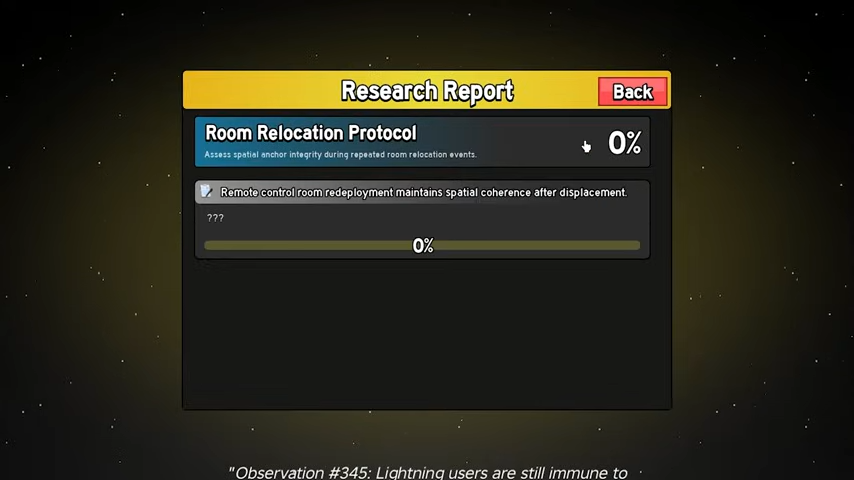
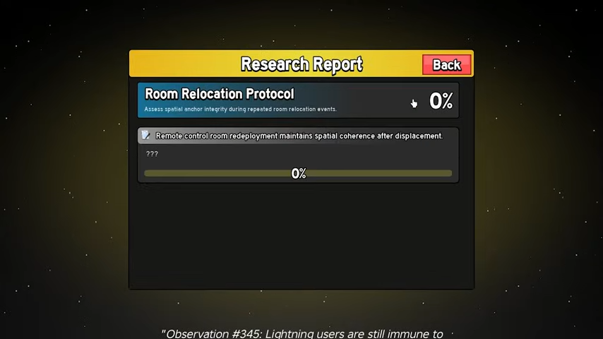

December 25, 2025
The Control fruit have gotten the rework it deserve, all the abilities of the first version of Control can't compare to how strong it is now. But it doesn't stop there, Control can be upgraded to get a new and better abilities. This article will cover how to access all abilities for Control Fruit. All things in this guides are based on a Youtube channel JCWK.
Next go talk to an NPC called Mysterious Scientist to access an Admin Panel. Player can find this NPC on 2nd Sea and 3rd Sea only. On 2nd Sea player can find it inside the laboratory on Hot n' Cold island, on 3rd sea this NPC stand inside The Sea Castle.
To obtain the first ability, player need to complete certain quest. The first one, it require the player to finish one Dungeons while have the Control fruit equipped.
Speak to an NPC named Lucien to teleport to the Dungeons Hub. Player can find this NPC on Hot n' Cold island for 2nd sea, and Sea Castle for 3rd sea.
After finishing the Dungeons, go speak to Trinket Refiner to scrap your trinket to get Simulation Data. Which is a required material to upgrade abilities. Trinket Refiner can be found on Dungeons Hub.
Player need to finish 4 Dungeons with Control fruit equipped.
 


The last abilities has 2 part, the first one, player need to cut any object or building with the M1 Spatial cut, which can be done easily by dragging a cusor inside a domain on Dagger Mode. The second part, player need to eat a physical Control fruit.
Go check their channel JCWK and HyperJay06
That's all the guides for Control abilities!
Want more Roblox news, codes, and guides? Check out our other articles on BloxSpark for the latest updates on your favorite games!